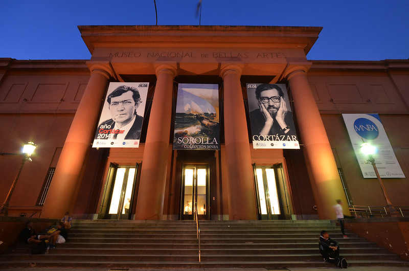
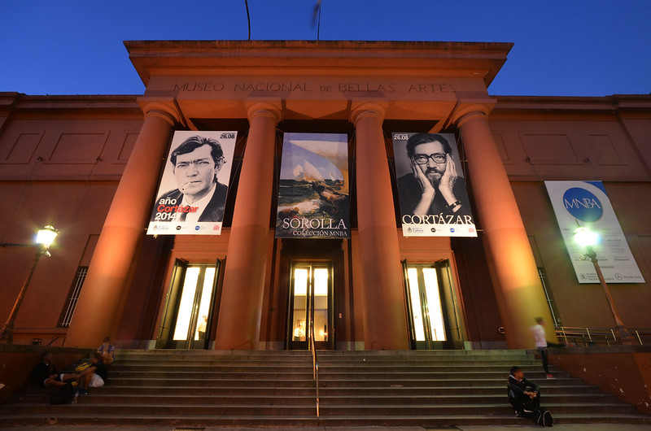
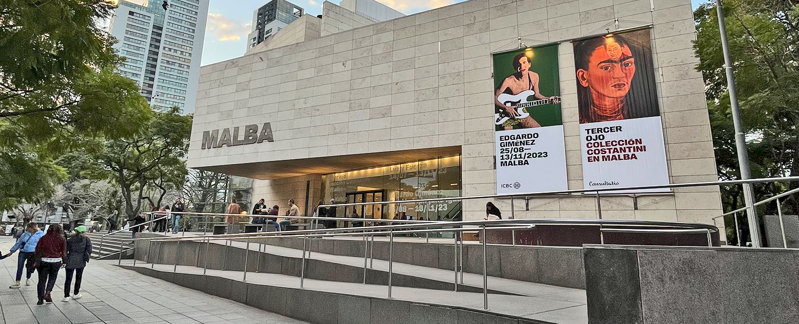
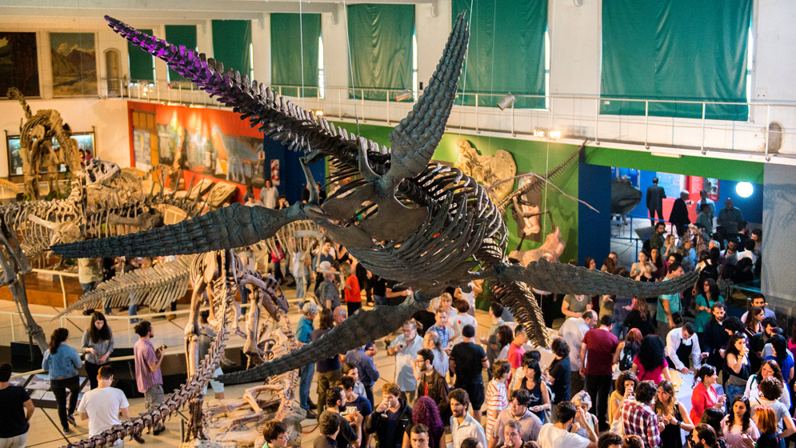

Museo Nacional de Bellas Artes
Inaugurado en 1896, alberga más de 12.000 piezas de artistas como Van Gogh, Monet, Berni y más. Entrada gratuita, en Recoleta, Buenos Aires.
Inaugurado en 1896, alberga más de 12.000 piezas de artistas como Van Gogh, Monet, Berni y más. Entrada gratuita, en Recoleta, Buenos Aires.
Fundado en 2001, es un museo clave del arte moderno y contemporáneo latinoamericano. Exhibe obras de Kahlo, Rivera, Xul Solar, entre otros.
Ubicado en Caballito, fue fundado en 1823. Exhibe fósiles, dinosaurios, insectos y minerales. Ideal para visitas familiares y educativas.
